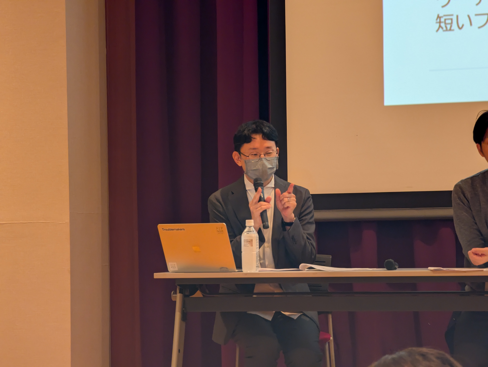
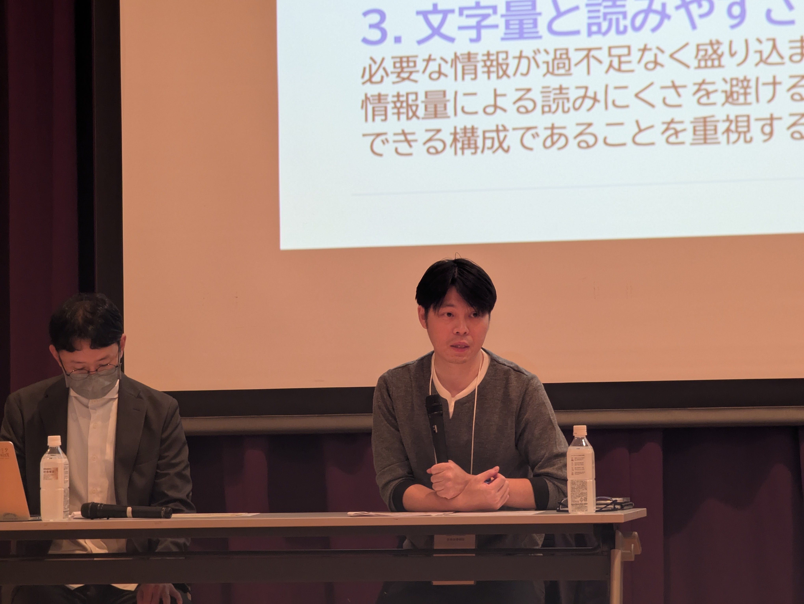
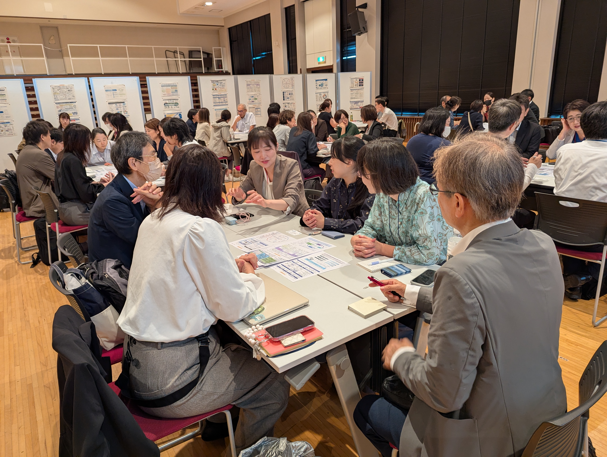
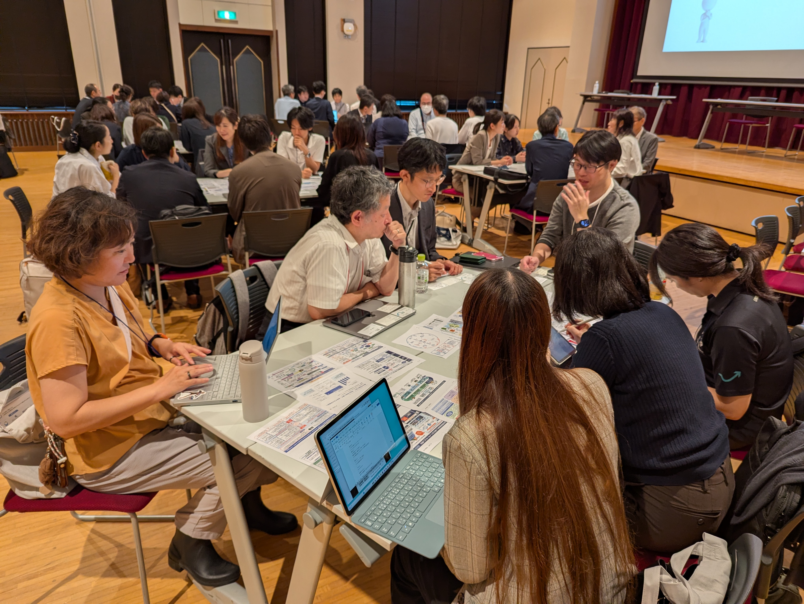

2026年9月29日、RA協議会第12回年次大会ネットワーキングセッション N-4「ポンチ絵にまつわるエトセトラ 〜ポンチ絵でつながるURAネットワーキングセッション〜」を開催しました。
本セッションは２部構成となっており、前半は「ゆるコンペ：ポンチ絵編」における授賞式を行い、後半は、参加者間のネットワーク構築を目的としたグループディスカッションを行いました。
授賞式では、まず富田審査員、菊地審査員から講評をいただきました。審査では、レイアウトの分かりやすさ、文字の読みやすさ、図表の美しさ、情報の論理構成、読み手の理解の進み方など、多様な観点からポンチ絵の工夫が評価されました。


その後、受賞者に対して賞状の授与を行うとともに、受賞作品の優れた点について審査員からコメントをいただきました。また、受賞者からは１枚に込められた工夫や裏話についてコメントをいただきました。
後半のグループディスカッションでは、「印象に残ったポンチ絵とその理由」「ポンチ絵作成で工夫したこと、困ったこと」「生成AIをポンチ絵づくりにどう活用したか、またその活用をどう捉えているか」をテーマに、参加者同士で議論を行いました。実際に作品を見ながら、表現方法や構成の工夫、作成時の悩みを共有することで、所属や立場を越えた交流の機会となりました。


ポンチ絵は、単に情報をまとめるための資料ではなく、研究や事業の価値を相手に伝えるための重要なコミュニケーションツールです。
今回の授賞式とグループディスカッションを通じて、参加者それぞれが持つ工夫や視点を共有し、今後の実務に生かせる多くの気づきを得る機会となれば幸いです。
ご応募・ご参加いただいた皆さま、審査にご協力いただいた皆さま、ならびに開催にご後援いただいた横浜国立大学研究推進機構URA育成教育研究センターの皆さまに、心より御礼申し上げます。
RA協議会スキルプログラム専門委員会では、今後もURA等の実務に役立つ学びと交流の機会を企画してまいります。